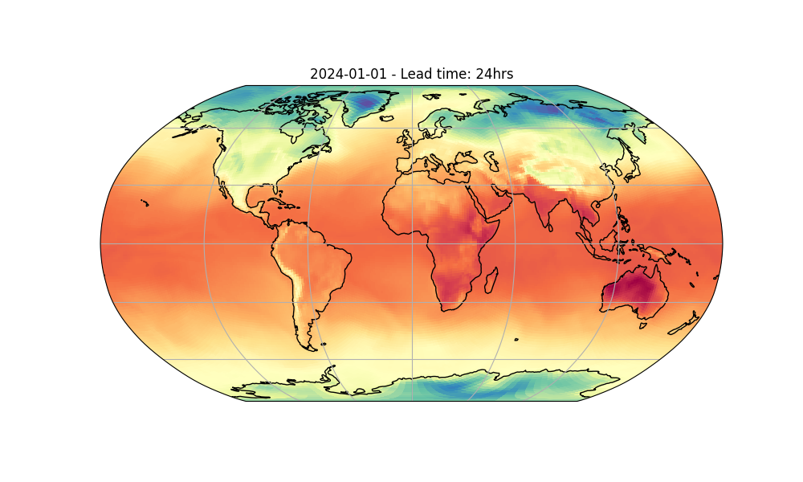

Note
Go to the end to download the full example code.
Running Deterministic Inference#
Basic deterministic inference workflow.
This example will demonstrate how to run a simple inference workflow to generate a basic determinstic forecast using one of the built in models of Earth-2 Inference Studio.
In this example you will learn:
How to instantiate a built in prognostic model
Creating a data source and IO object
Running a simple built in workflow
Post-processing results
# /// script
# dependencies = [
# "earth2studio[dlwp] @ git+https://github.com/NVIDIA/earth2studio.git",
# "cartopy",
# ]
# ///
Set Up#
All workflows inside Earth2Studio require constructed components to be
handed to them. In this example, let’s take a look at the most basic:
earth2studio.run.deterministic().
Thus, we need the following:
Prognostic Model: Use the built in FourCastNet Model
earth2studio.models.px.FCN.Datasource: Pull data from the GFS data api
earth2studio.data.GFS.IO Backend: Let’s save the outputs into a Zarr store
earth2studio.io.ZarrBackend.
import os
os.makedirs("outputs", exist_ok=True)
from dotenv import load_dotenv
load_dotenv() # TODO: make common example prep function
from earth2studio.data import GFS
from earth2studio.io import ZarrBackend
from earth2studio.models.px import DLWP
# Load the default model package which downloads the check point from NGC
package = DLWP.load_default_package()
model = DLWP.load_model(package)
# Create the data source
data = GFS()
# Create the IO handler, store in memory
io = ZarrBackend()
Execute the Workflow#
With all components initialized, running the workflow is a single line of Python code. Workflow will return the provided IO object back to the user, which can be used to then post process. Some have additional APIs that can be handy for post-processing or saving to file. Check the API docs for more information.
For the forecast we will predict for two days (these will get executed as a batch) for 20 forecast steps which is 5 days.
import earth2studio.run as run
nsteps = 20
io = run.deterministic(["2024-01-01"], nsteps, model, data, io)
print(io.root.tree())
2026-03-24 22:08:19.834 | INFO | earth2studio.run:deterministic:78 - Running simple workflow!
2026-03-24 22:08:19.834 | INFO | earth2studio.run:deterministic:85 - Inference device: cuda
Fetching GFS data: 0%| | 0/7 [00:00<?, ?it/s]
2026-03-24 22:08:19.909 | DEBUG | earth2studio.data.gfs:fetch_array:386 - Fetching GFS grib file: noaa-gfs-bdp-pds/gfs.20231231/18/atmos/gfs.t18z.pgrb2.0p25.f000 397402829-996456
Fetching GFS data: 0%| | 0/7 [00:00<?, ?it/s]
2026-03-24 22:08:19.931 | DEBUG | earth2studio.data.gfs:fetch_array:386 - Fetching GFS grib file: noaa-gfs-bdp-pds/gfs.20231231/18/atmos/gfs.t18z.pgrb2.0p25.f000 208052937-721817
Fetching GFS data: 0%| | 0/7 [00:00<?, ?it/s]
2026-03-24 22:08:19.943 | DEBUG | earth2studio.data.gfs:fetch_array:386 - Fetching GFS grib file: noaa-gfs-bdp-pds/gfs.20231231/18/atmos/gfs.t18z.pgrb2.0p25.f000 408062467-879185
Fetching GFS data: 0%| | 0/7 [00:00<?, ?it/s]
2026-03-24 22:08:19.954 | DEBUG | earth2studio.data.gfs:fetch_array:386 - Fetching GFS grib file: noaa-gfs-bdp-pds/gfs.20231231/18/atmos/gfs.t18z.pgrb2.0p25.f000 294691465-856457
Fetching GFS data: 0%| | 0/7 [00:00<?, ?it/s]
2026-03-24 22:08:19.965 | DEBUG | earth2studio.data.gfs:fetch_array:386 - Fetching GFS grib file: noaa-gfs-bdp-pds/gfs.20231231/18/atmos/gfs.t18z.pgrb2.0p25.f000 329116923-847018
Fetching GFS data: 0%| | 0/7 [00:00<?, ?it/s]
2026-03-24 22:08:19.976 | DEBUG | earth2studio.data.gfs:fetch_array:386 - Fetching GFS grib file: noaa-gfs-bdp-pds/gfs.20231231/18/atmos/gfs.t18z.pgrb2.0p25.f000 251230645-803982
Fetching GFS data: 0%| | 0/7 [00:00<?, ?it/s]
2026-03-24 22:08:19.987 | DEBUG | earth2studio.data.gfs:fetch_array:386 - Fetching GFS grib file: noaa-gfs-bdp-pds/gfs.20231231/18/atmos/gfs.t18z.pgrb2.0p25.f000 420029701-1181204
Fetching GFS data: 0%| | 0/7 [00:00<?, ?it/s]
Fetching GFS data: 100%|██████████| 7/7 [00:00<00:00, 78.78it/s]
Fetching GFS data: 0%| | 0/7 [00:00<?, ?it/s]
2026-03-24 22:08:20.063 | DEBUG | earth2studio.data.gfs:fetch_array:386 - Fetching GFS grib file: noaa-gfs-bdp-pds/gfs.20240101/00/atmos/gfs.t00z.pgrb2.0p25.f000 246334297-805355
Fetching GFS data: 0%| | 0/7 [00:00<?, ?it/s]
2026-03-24 22:08:20.075 | DEBUG | earth2studio.data.gfs:fetch_array:386 - Fetching GFS grib file: noaa-gfs-bdp-pds/gfs.20240101/00/atmos/gfs.t00z.pgrb2.0p25.f000 414179964-1179422
Fetching GFS data: 0%| | 0/7 [00:00<?, ?it/s]
2026-03-24 22:08:20.087 | DEBUG | earth2studio.data.gfs:fetch_array:386 - Fetching GFS grib file: noaa-gfs-bdp-pds/gfs.20240101/00/atmos/gfs.t00z.pgrb2.0p25.f000 323956279-837771
Fetching GFS data: 0%| | 0/7 [00:00<?, ?it/s]
2026-03-24 22:08:20.098 | DEBUG | earth2studio.data.gfs:fetch_array:386 - Fetching GFS grib file: noaa-gfs-bdp-pds/gfs.20240101/00/atmos/gfs.t00z.pgrb2.0p25.f000 402321768-876246
Fetching GFS data: 0%| | 0/7 [00:00<?, ?it/s]
2026-03-24 22:08:20.109 | DEBUG | earth2studio.data.gfs:fetch_array:386 - Fetching GFS grib file: noaa-gfs-bdp-pds/gfs.20240101/00/atmos/gfs.t00z.pgrb2.0p25.f000 391722290-987401
Fetching GFS data: 0%| | 0/7 [00:00<?, ?it/s]
2026-03-24 22:08:20.120 | DEBUG | earth2studio.data.gfs:fetch_array:386 - Fetching GFS grib file: noaa-gfs-bdp-pds/gfs.20240101/00/atmos/gfs.t00z.pgrb2.0p25.f000 289307267-851916
Fetching GFS data: 0%| | 0/7 [00:00<?, ?it/s]
2026-03-24 22:08:20.131 | DEBUG | earth2studio.data.gfs:fetch_array:386 - Fetching GFS grib file: noaa-gfs-bdp-pds/gfs.20240101/00/atmos/gfs.t00z.pgrb2.0p25.f000 204118947-720169
Fetching GFS data: 0%| | 0/7 [00:00<?, ?it/s]
Fetching GFS data: 100%|██████████| 7/7 [00:00<00:00, 88.34it/s]
2026-03-24 22:08:20.174 | SUCCESS | earth2studio.run:deterministic:109 - Fetched data from GFS
2026-03-24 22:08:20.191 | INFO | earth2studio.run:deterministic:139 - Inference starting!
Running inference: 0%| | 0/21 [00:00<?, ?it/s]
Running inference: 5%|▍ | 1/21 [00:00<00:04, 4.23it/s]
Running inference: 10%|▉ | 2/21 [00:00<00:08, 2.31it/s]
Running inference: 14%|█▍ | 3/21 [00:01<00:06, 2.86it/s]
Running inference: 19%|█▉ | 4/21 [00:01<00:05, 3.15it/s]
Running inference: 24%|██▍ | 5/21 [00:01<00:04, 3.41it/s]
Running inference: 29%|██▊ | 6/21 [00:01<00:04, 3.53it/s]
Running inference: 33%|███▎ | 7/21 [00:02<00:03, 3.66it/s]
Running inference: 38%|███▊ | 8/21 [00:02<00:03, 3.66it/s]
Running inference: 43%|████▎ | 9/21 [00:02<00:03, 3.76it/s]
Running inference: 48%|████▊ | 10/21 [00:02<00:02, 3.74it/s]
Running inference: 52%|█████▏ | 11/21 [00:03<00:02, 3.81it/s]
Running inference: 57%|█████▋ | 12/21 [00:03<00:02, 3.75it/s]
Running inference: 62%|██████▏ | 13/21 [00:03<00:02, 3.83it/s]
Running inference: 67%|██████▋ | 14/21 [00:03<00:01, 3.74it/s]
Running inference: 71%|███████▏ | 15/21 [00:04<00:01, 3.83it/s]
Running inference: 76%|███████▌ | 16/21 [00:04<00:01, 3.78it/s]
Running inference: 81%|████████ | 17/21 [00:04<00:01, 3.85it/s]
Running inference: 86%|████████▌ | 18/21 [00:04<00:00, 3.80it/s]
Running inference: 90%|█████████ | 19/21 [00:05<00:00, 3.87it/s]
Running inference: 95%|█████████▌| 20/21 [00:05<00:00, 3.79it/s]
Running inference: 100%|██████████| 21/21 [00:05<00:00, 3.86it/s]
Running inference: 100%|██████████| 21/21 [00:05<00:00, 3.65it/s]
2026-03-24 22:08:25.946 | SUCCESS | earth2studio.run:deterministic:151 -
Inference complete
/
├── lat (721,) float64
├── lead_time (21,) timedelta64
├── lon (1440,) float64
├── t2m (1, 21, 721, 1440) float32
├── t850 (1, 21, 721, 1440) float32
├── tcwv (1, 21, 721, 1440) float32
├── time (1,) datetime64
├── z1000 (1, 21, 721, 1440) float32
├── z300 (1, 21, 721, 1440) float32
├── z500 (1, 21, 721, 1440) float32
└── z700 (1, 21, 721, 1440) float32
Post Processing#
The last step is to post process our results. Cartopy is a great library for plotting fields on projections of a sphere. Here we will just plot the temperature at 2 meters (t2m) 1 day into the forecast.
Notice that the Zarr IO function has additional APIs to interact with the stored data.
import cartopy.crs as ccrs
import matplotlib.pyplot as plt
forecast = "2024-01-01"
variable = "t2m"
step = 4 # lead time = 24 hrs
plt.close("all")
# Create a Robinson projection
projection = ccrs.Robinson()
# Create a figure and axes with the specified projection
fig, ax = plt.subplots(subplot_kw={"projection": projection}, figsize=(10, 6))
# Plot the field using pcolormesh
im = ax.pcolormesh(
io["lon"][:],
io["lat"][:],
io[variable][0, step],
transform=ccrs.PlateCarree(),
cmap="Spectral_r",
)
# Set title
ax.set_title(f"{forecast} - Lead time: {6*step}hrs")
# Add coastlines and gridlines
ax.coastlines()
ax.gridlines()
plt.savefig("outputs/01_t2m_prediction.jpg")

Total running time of the script: (0 minutes 25.931 seconds)